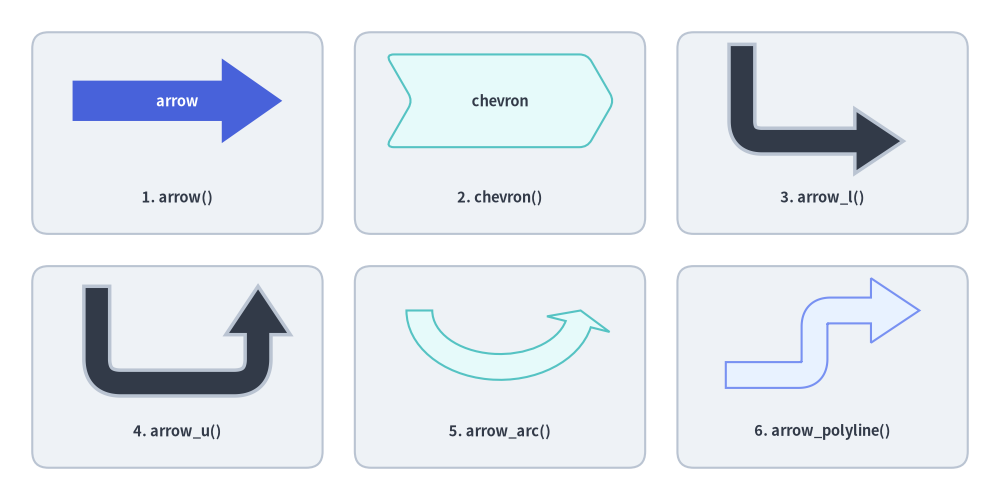
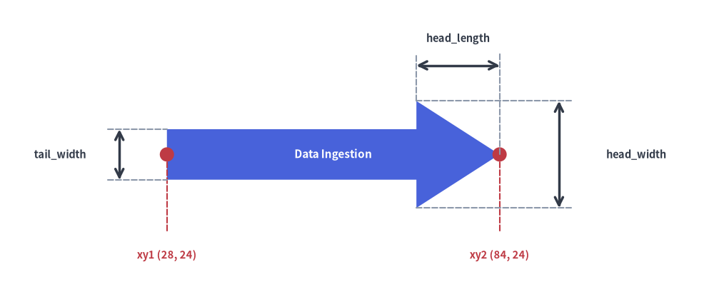
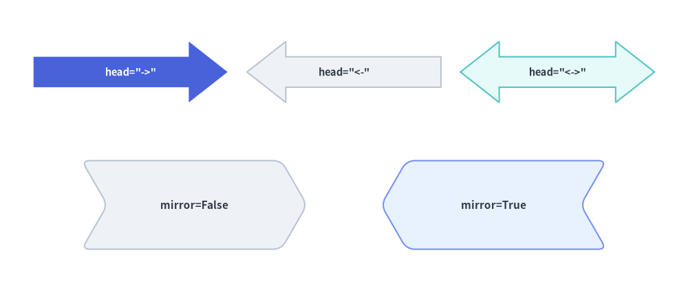
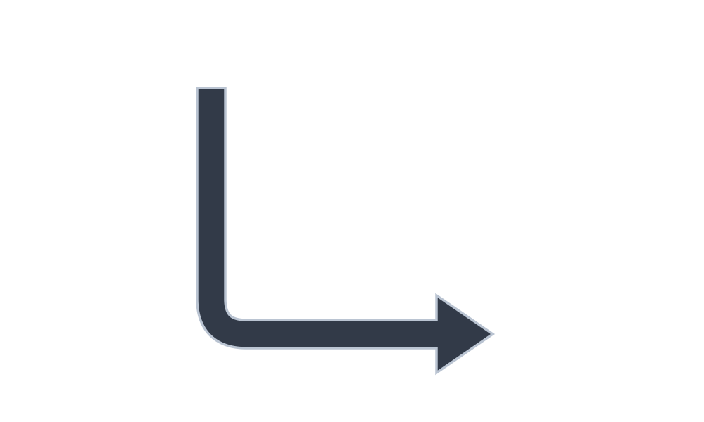

Block Arrows & Chevrons
In addition to 1D stroke connectors (drawlib.lines), the Block Arrows & Chevrons category of drawlib.shapes provides 6 closed 2D polygon arrow primitives: point-to-point straight block arrows (arrow), sequential process chevrons (chevron), 90° L-turn arrows (arrow_l), 180° U-turn feedback arrows (arrow_u), circular/elliptical arc arrows (arrow_arc), and multi-waypoint routed block arrows (arrow_polyline).

Source Code
from drawlib.canvas import save, setup
from drawlib.shapes import arrow, arrow_arc, arrow_l, arrow_polyline, arrow_u, chevron, rectangle
from drawlib.styles import Styles
from drawlib.text import text
setup(width=124, height=62)
# Subtle background cards for 3x2 grid
for cx in (22, 62, 102):
for cy in (45.5, 16.5):
rectangle((cx, cy), width=36, height=25, style=Styles.Neutral.patch(shape_r=2))
lbl = Styles.DarkBold.patch(text_size=10.5)
# 1. Straight Block Arrow (Hero)
arrow(
(9, 49.5),
(35, 49.5),
tail_width=5.0,
head_width=10.5,
head_length=7.5,
style=Styles.PrimaryFlat,
text="arrow",
text_style=Styles.WhiteBold.patch(text_size=10.5),
)
text((22, 37.5), "1. arrow()", style=lbl)
# 2. Chevron
chevron(
(62, 49.5),
width=25,
height=11.5,
corner_angle=60,
style=Styles.SecondaryNeutral.patch(shape_r=1),
text="chevron",
text_style=Styles.DarkBold.patch(text_size=10.5),
)
text((62, 37.5), "2. chevron()", style=lbl)
# 3. L-shaped Arrow
arrow_l(
(102, 50.5),
width=20,
height=12,
tail_width=3.2,
head_width=8,
head_length=6,
style=Styles.DarkBold.patch(shape_r=2.5),
)
text((102, 37.5), "3. arrow_l()", style=lbl)
# 4. U-turn Arrow
arrow_u(
(22, 20.5),
width=20,
height=12,
tail_width=3.2,
head_width=8,
head_length=6,
style=Styles.DarkBold.patch(shape_r=3),
)
text((22, 8.5), "4. arrow_u()", style=lbl)
# 5. Arrow Arc (Circular flow)
arrow_arc(
(62, 23.5),
width=20,
height=14,
angle_start=180,
angle_end=0,
tail_width=3.2,
head_width=8,
head_angle=14,
style=Styles.SecondaryNeutral,
)
text((62, 8.5), "5. arrow_arc()", style=lbl)
# 6. Multi-Point Polyline Arrow
arrow_polyline(
[(90, 15.5), (101, 15.5), (101, 23.5), (114, 23.5)],
tail_width=3.2,
head_width=8,
head_length=6,
style=Styles.PrimaryNeutral.patch(shape_r=2),
)
text((102, 8.5), "6. arrow_polyline()", style=lbl)
save()
1. Core Geometric Concepts
Unlike 1D connector strokes, Drawlib's 6 block arrow primitives build closed 2D polygons with explicit shaft thickness (tail_width) and fin dimensions (head_width, head_length, or head_angle) so transitions can carry bold fills, borders, and inline labels. Watch how shaft/head sizing, directionality (head, mirror), corner filleting (shape_r), elliptical angular sweeps (angle_start..angle_end), and multi-waypoint routing (xys) reshape each primitive:
Source Code
from __future__ import annotations
import math
from drawlib.anim import Animation
from drawlib.canvas import save, setup
from drawlib.icons import code as code_icons
from drawlib.icons import phosphor
from drawlib.lines import line
from drawlib.shapes import (
arc,
arrow,
arrow_arc,
arrow_l,
arrow_polyline,
arrow_u,
chevron,
circle,
ellipse,
rectangle,
)
from drawlib.smartarts import SourceCode, SourceCodeStyles
from drawlib.styles import Styles
from drawlib.text import text
W, H = 138.0, 82.0
setup(width=W, height=H)
anim = Animation(fps=10.0, loop=0)
CODE_TEXT_SIZE = 10.0
PT_TO_CANVAS = W / 720.0
FONT_CANVAS = CODE_TEXT_SIZE * PT_TO_CANVAS
LINE_H = FONT_CANVAS * 1.8
PAD_Y = FONT_CANVAS * 1.2
CODE_STYLES = SourceCodeStyles.get("default", font_lang="en", text_size=CODE_TEXT_SIZE).patch(
box_style=Styles.Neutral.patch(shape_fill_color=(0, 0, 0, 0), shape_line_width=0),
)
PANE_HEADER = Styles.Neutral.patch(
shape_fill_color=(238, 243, 250),
shape_line_color=(203, 213, 225),
shape_line_width=1.2,
shape_r=0.0,
)
EDITOR_BODY = Styles.Neutral.patch(
shape_fill_color=(250, 252, 255),
shape_line_color=(203, 213, 225),
shape_line_width=1.2,
shape_r=0.0,
)
TAKEAWAY_BODY = Styles.Neutral.patch(
shape_fill_color=(242, 246, 253),
shape_line_color=(203, 213, 225),
shape_line_width=1.2,
shape_r=0.0,
)
STUDIO_BODY = Styles.Neutral.patch(
shape_fill_color=(239, 243, 249),
shape_line_color=(203, 213, 225),
shape_line_width=1.2,
shape_r=0.0,
)
PART_ITEMS = [
("1. arrow()", "shaft, head & dir"),
("2. chevron()", "angle, mirror & r"),
("3. arrow_l & arrow_u", "90° & 180° turns"),
("4. arc & polyline", "sweep & waypoints"),
]
def draw_step_bar(active_part: int) -> None:
"""Draw top 4-part progress bar (active_part is 1..4)."""
pill_w = 31.0
pill_h = 7.4
gap = 2.0
start_x = 4.0 + pill_w / 2.0
cy = 75.2
for idx, (label, sublabel) in enumerate(PART_ITEMS, start=1):
cx = start_x + (idx - 1) * (pill_w + gap)
if idx > 1:
prev_cx = cx - (pill_w + gap)
line(
(prev_cx + pill_w / 2.0 + 0.2, cy),
(cx - pill_w / 2.0 - 0.2, cy),
style=Styles.PrimaryBold if idx <= active_part else Styles.MutedThin,
)
if idx == active_part:
st = Styles.PrimaryFlat.patch(shape_r=1.4)
tst = Styles.WhiteBold.patch(text_size=10.3)
sub_tst = Styles.White.patch(text_size=9.5)
elif idx < active_part:
st = Styles.PrimaryNeutral.patch(shape_r=1.4, shape_line_width=1.1)
tst = Styles.PrimaryBold.patch(text_size=10.3)
sub_tst = Styles.Primary.patch(text_size=9.5)
else:
st = Styles.Neutral.patch(shape_r=1.4, shape_line_width=1.1)
tst = Styles.MutedBold.patch(text_size=10.3)
sub_tst = Styles.Muted.patch(text_size=9.5)
rectangle((cx, cy), width=pill_w, height=pill_h, style=st)
text((cx, cy + 1.35), label, style=tst)
text((cx, cy - 1.55), sublabel, style=sub_tst)
def draw_left_pane(
active_part: int,
code_lines: list[str],
hl_range: tuple[int, int],
icon_fn: object,
summary_title: str,
summary_line1: str,
summary_line2: str,
) -> None:
"""Draw left Python code editor + bottom geometric concept note."""
x0, w = 4.0, 63.5
cx = x0 + w / 2.0
top_y = 63.2
header_h = 5.4
editor_h = 43.8
takeaway_h = 15.8
rectangle((cx, top_y + header_h / 2.0), width=w, height=header_h, style=PANE_HEADER)
code_icons.python((x0 + 3.6, top_y + header_h / 2.0), width=3.4, style=Styles.Neutral)
text(
(x0 + 6.5, top_y + header_h / 2.0),
"block_arrows.py",
style=Styles.DarkBold.patch(text_size=10.2, halign="left"),
)
text(
(x0 + w - 2.6, top_y + header_h / 2.0),
f"Part {active_part} / 4",
style=Styles.PrimaryBold.patch(text_size=9.8, halign="right"),
)
rectangle((cx, top_y - editor_h / 2.0), width=w, height=editor_h, style=EDITOR_BODY)
hl_start, hl_end = hl_range
hl_top = top_y - PAD_Y - hl_start * LINE_H
hl_bot = top_y - PAD_Y - (hl_end + 1) * LINE_H
hl_cy = (hl_top + hl_bot) / 2.0
hl_h = hl_top - hl_bot
rectangle(
(cx, hl_cy),
width=w - 0.6,
height=hl_h,
style=Styles.Neutral.patch(shape_fill_color=(229, 239, 255), shape_line_width=0),
)
rectangle(
(x0 + 0.55, hl_cy),
width=0.9,
height=hl_h,
style=Styles.PrimaryFlat.patch(shape_line_width=0),
)
SourceCode.draw(
xy=(x0, top_y),
width=w,
code="\n".join(code_lines),
styles=CODE_STYLES,
code_lang="python",
show_linenum=True,
align="top_left",
)
take_cy = 3.6 + takeaway_h / 2.0
rectangle((cx, take_cy), width=w, height=takeaway_h, style=TAKEAWAY_BODY)
circle(
(x0 + 6.4, take_cy),
radius=3.3,
style=Styles.PrimaryNeutral.patch(shape_line_width=1.2),
)
icon_fn((x0 + 6.4, take_cy), width=3.8, style=Styles.PrimaryBold) # type: ignore[operator]
text(
(x0 + 11.4, take_cy + 3.6),
summary_title,
style=Styles.DarkBold.patch(text_size=10.4, halign="left"),
)
text(
(x0 + 11.4, take_cy - 0.2),
summary_line1,
style=Styles.Dark.patch(text_size=9.7, halign="left"),
)
text(
(x0 + 11.4, take_cy - 3.8),
summary_line2,
style=Styles.PrimaryBold.patch(text_size=9.6, halign="left"),
)
def draw_geometry_studio(param_badge: str, footer_caption: str) -> tuple[float, float]:
"""Draw right geometry lab shell, inner coordinate sheet with subtle grid, and footer."""
x0, w = 70.0, 64.0
cx = x0 + w / 2.0
top_y = 63.2
header_h = 5.4
body_h = 59.6
rectangle((cx, top_y + header_h / 2.0), width=w, height=header_h, style=PANE_HEADER)
phosphor.ruler((x0 + 3.6, top_y + header_h / 2.0), width=3.4, style=Styles.Primary)
text(
(x0 + 6.5, top_y + header_h / 2.0),
"Live Geometry & Guides",
style=Styles.DarkBold.patch(text_size=10.2, halign="left"),
)
text(
(x0 + w - 2.6, top_y + header_h / 2.0),
param_badge,
style=Styles.PrimaryBold.patch(text_size=9.6, halign="right"),
)
rectangle((cx, 3.6 + body_h / 2.0), width=w, height=body_h, style=STUDIO_BODY)
sheet_cx, sheet_cy = cx, 36.2
sheet_w, sheet_h = 54.0, 40.0
sx0, sy0 = sheet_cx - sheet_w / 2.0, sheet_cy - sheet_h / 2.0
rectangle(
(sheet_cx, sheet_cy),
width=sheet_w,
height=sheet_h,
style=Styles.Neutral.patch(
shape_fill_color=(255, 255, 255),
shape_line_color=(180, 194, 214),
shape_line_width=1.2,
),
)
g_st = Styles.MutedThin.patch(line_color=(232, 238, 246), line_width=0.8)
for gx in range(1, 6):
vx = sx0 + gx * (sheet_w / 6.0)
line((vx, sy0), (vx, sy0 + sheet_h), style=g_st)
for gy in range(1, 5):
vy = sy0 + gy * (sheet_h / 5.0)
line((sx0, vy), (sx0 + sheet_w, vy), style=g_st)
rectangle(
(cx, 8.4),
width=59.2,
height=5.2,
style=Styles.Neutral.patch(
shape_fill_color=(255, 255, 255),
shape_line_color=(203, 213, 225),
shape_line_width=1.1,
shape_r=2.4,
),
text=footer_caption,
text_style=Styles.DarkBold.patch(text_size=9.8),
)
return sheet_cx, sheet_cy
# =========================================================================
# Part 1: arrow() — Shaft/Head Dimensions & Angled Bidirectional Label
# =========================================================================
for tw, hw, st_name, st_obj, dur in (
(4.0, 9.5, "PrimaryNeutral", Styles.PrimaryNeutral, 3.2),
(5.5, 11.8, "PrimaryFlat", Styles.PrimaryFlat, 0.50),
(7.0, 14.0, "PrimaryFlat", Styles.PrimaryFlat, 3.4),
):
code_a1 = [
"from drawlib.shapes import arrow",
"from drawlib.styles import Styles",
"",
"arrow(",
" (32, 30), (68, 30),",
f" tail_width={tw:.1f}, head_width={hw:.1f},",
' head_length=8.5, head="->",',
f" style=Styles.{st_name},",
")",
]
with anim.frame(duration=dur):
draw_step_bar(1)
draw_left_pane(
1,
code_a1,
(4, 6),
phosphor.arrow_fat_lines_right,
"Straight Block Arrow (arrow)",
"Spans xy1 → xy2 as a closed 2D polygon",
"tail_width & head_width size shaft and fin",
)
scx, scy = draw_geometry_studio(
f"tail={tw:.1f}, head={hw:.1f}",
f"xy1 → xy2 • tail_width={tw:.1f}, head_width={hw:.1f}",
)
cy_a = scy - 0.4
x1, x2 = scx - 18.0, scx + 11.5
hl = 8.5
arrow((x1, cy_a), (x2, cy_a), tail_width=tw, head_width=hw, head_length=hl, head="->", style=st_obj)
# Endpoint markers for xy1 and xy2
for px, lbl in ((x1, "xy1"), (x2, "xy2")):
line((px, cy_a), (px, cy_a - 10.6), style=Styles.DangerDashed.patch(line_width=1.1))
circle((px, cy_a), radius=1.15, style=Styles.DangerFlat)
text((px, cy_a - 13.0), lbl, style=Styles.DangerBold.patch(text_size=9.6))
# Dimension: tail_width on left
line((x1 - 3.6, cy_a - tw / 2.0), (x1, cy_a - tw / 2.0), style=Styles.MutedDashed.patch(line_width=1.0))
line((x1 - 3.6, cy_a + tw / 2.0), (x1, cy_a + tw / 2.0), style=Styles.MutedDashed.patch(line_width=1.0))
line((x1 - 2.6, cy_a - tw / 2.0), (x1 - 2.6, cy_a + tw / 2.0), arrow_head="<->", style=Styles.PrimaryBold.patch(line_width=1.4))
text((x1 - 1.5, cy_a + hw / 2.0 + 3.2), f"tail={tw:.1f}", style=Styles.PrimaryBold.patch(text_size=9.5))
# Dimension: head_length above arrowhead
line((x2 - hl, cy_a + hw / 2.0), (x2 - hl, cy_a + hw / 2.0 + 3.8), style=Styles.MutedDashed.patch(line_width=1.0))
line((x2, cy_a), (x2, cy_a + hw / 2.0 + 3.8), style=Styles.MutedDashed.patch(line_width=1.0))
line((x2 - hl, cy_a + hw / 2.0 + 2.8), (x2, cy_a + hw / 2.0 + 2.8), arrow_head="<->", style=Styles.DarkBold.patch(line_width=1.3))
text((x2 - hl / 2.0, cy_a + hw / 2.0 + 6.0), "head_length=8.5", style=Styles.DarkBold.patch(text_size=9.5))
# Dimension: head_width on right
line((x2 - hl, cy_a - hw / 2.0), (x2 + 3.8, cy_a - hw / 2.0), style=Styles.MutedDashed.patch(line_width=1.0))
line((x2 - hl, cy_a + hw / 2.0), (x2 + 3.8, cy_a + hw / 2.0), style=Styles.MutedDashed.patch(line_width=1.0))
line((x2 + 2.8, cy_a - hw / 2.0), (x2 + 2.8, cy_a + hw / 2.0), arrow_head="<->", style=Styles.PrimaryBold.patch(line_width=1.4))
text((x2 + 4.3, cy_a), f"head\n{hw:.1f}", style=Styles.PrimaryBold.patch(text_size=9.5, halign="left"))
# 1C: Angled bidirectional head="<->" with auto-rotated text="Data Bus"
with anim.frame(duration=3.5):
code_a2 = [
"from drawlib.shapes import arrow",
"from drawlib.styles import Styles",
"",
"arrow(",
" (32, 23), (68, 37),",
" tail_width=6.2, head_width=12.5,",
' head_length=7.5, head="<->",',
" style=Styles.PrimaryFlat,",
' text="Data Bus",',
" text_style=Styles.WhiteBold,",
")",
]
draw_step_bar(1)
draw_left_pane(
1,
code_a2,
(6, 9),
phosphor.arrows_left_right,
"Bidirectional & Rotated Text",
"head='<->' places symmetric fins on both ends",
"Inline text auto-rotates along shaft angle",
)
scx, scy = draw_geometry_studio('head = "<->"', 'Angled head="<->" • Auto-Rotated Label (+21°)')
p1 = (scx - 18.0, scy - 7.0)
p2 = (scx + 18.0, scy + 7.0)
line((p1[0], p1[1]), (p1[0] + 22.0, p1[1]), style=Styles.MutedDashed.patch(line_width=1.1))
arc((p1[0], p1[1]), width=28.0, height=28.0, angle_start=0, angle_end=21.2, style=Styles.PrimaryNeutral.patch(shape_line_width=1.8))
text((p1[0] + 17.5, p1[1] + 2.8), "+21°", style=Styles.PrimaryBold.patch(text_size=9.5, halign="left"))
arrow(
p1,
p2,
tail_width=6.2,
head_width=12.5,
head_length=7.5,
head="<->",
style=Styles.PrimaryFlat,
text="Data Bus",
text_style=Styles.WhiteBold.patch(text_size=10.5),
)
circle(p1, radius=1.2, style=Styles.DangerFlat)
text((p1[0], p1[1] - 4.2), "xy1", style=Styles.DangerBold.patch(text_size=9.6))
circle(p2, radius=1.2, style=Styles.DangerFlat)
text((p2[0], p2[1] + 4.4), "xy2", style=Styles.DangerBold.patch(text_size=9.6))
# =========================================================================
# Part 2: chevron() — corner_angle Morphing & mirror=True + shape_r
# =========================================================================
for c_ang, dur in ((78, 3.2), (65, 0.50), (52, 3.4)):
code_ch1 = [
"from drawlib.shapes import chevron",
"from drawlib.styles import Styles",
"",
"chevron(",
" (50, 30), width=28, height=16,",
f" corner_angle={c_ang},",
" mirror=False,",
" style=Styles.SecondaryNeutral,",
")",
]
with anim.frame(duration=dur):
draw_step_bar(2)
draw_left_pane(
2,
code_ch1,
(5, 6),
phosphor.caret_double_right,
"Process Chevron (corner_angle)",
"Lower corner_angle deepens V-tip & rear notch",
"Centered at xy when using preset Styles.*",
)
scx, scy = draw_geometry_studio(
f"corner_angle = {c_ang}°",
f"chevron(corner_angle={c_ang}) • V-Tip & Notch Slope",
)
cy_c = scy - 0.4
if c_ang < 78:
chevron(
(scx, cy_c),
width=28.0,
height=16.0,
corner_angle=78,
mirror=False,
style=Styles.MutedDashed.patch(
shape_fill_color=(0, 0, 0, 0),
shape_line_color=(182, 196, 216),
shape_line_width=1.1,
),
)
chevron(
(scx, cy_c),
width=28.0,
height=16.0,
corner_angle=c_ang,
mirror=False,
style=Styles.SecondaryNeutral,
)
circle((scx, cy_c), radius=1.2, style=Styles.DangerFlat)
text((scx, cy_c - 3.6), "xy (center)", style=Styles.DangerBold.patch(text_size=9.6))
text((scx, cy_c + 12.2), f"corner_angle = {c_ang}° (Flow +X →)", style=Styles.PrimaryBold.patch(text_size=9.8))
if c_ang == 52:
text((scx, cy_c - 12.2), "Dashed = Previous 78° Profile", style=Styles.MutedBold.patch(text_size=9.5))
with anim.frame(duration=3.5):
code_ch2 = [
"from drawlib.shapes import chevron",
"from drawlib.styles import Styles",
"",
"chevron(",
" (50, 30), width=28, height=16,",
" corner_angle=56, mirror=True,",
" style=Styles.PrimaryNeutral.patch(",
" shape_r=2.0,",
" ),",
' text="Reverse",',
")",
]
draw_step_bar(2)
draw_left_pane(
2,
code_ch2,
(5, 8),
phosphor.caret_double_right,
"Rounded & Mirrored Chevron",
"mirror=True flips direction horizontally (-X)",
"shape_r rounds all 6 vertices (or 6-tuple)",
)
scx, scy = draw_geometry_studio("mirror=True, r=2.0", "mirror=True (Points -X) • Rounded shape_r=2.0")
cy_c = scy - 0.6
chevron(
(scx, cy_c),
width=28.0,
height=16.0,
corner_angle=56,
mirror=True,
style=Styles.PrimaryNeutral.patch(shape_r=2.0),
text="Reverse",
text_style=Styles.DarkBold.patch(text_size=10.5),
)
line((scx + 12.0, cy_c + 12.0), (scx - 12.0, cy_c + 12.0), arrow_head="->", style=Styles.PrimaryBold.patch(line_width=1.5))
text((scx, cy_c + 15.2), "← Flipped Toward -X (mirror=True)", style=Styles.PrimaryBold.patch(text_size=9.6))
text((scx, cy_c - 12.2), "shape_r = 2.0 (6 Filleted Vertices)", style=Styles.DarkBold.patch(text_size=9.6))
# =========================================================================
# Part 3: arrow_l & arrow_u — 90° Elbow & 180° U-Turn Fillets (shape_r)
# =========================================================================
for r_l, dur in ((0.0, 0.55), (2.5, 0.45), (5.0, 3.5)):
r_txt = f"{r_l:g}"
code_l = [
"from drawlib.shapes import arrow_l",
"from drawlib.styles import Styles",
"",
"arrow_l(",
" (50, 30), width=28, height=21,",
" tail_width=4.6, head_width=10.5,",
' head_length=7.0, head="<->",',
" style=Styles.PrimaryNeutral.patch(",
f" shape_r={r_txt}, angle=0,",
" ),",
")",
]
with anim.frame(duration=dur):
draw_step_bar(3)
draw_left_pane(
3,
code_l,
(6, 8),
phosphor.arrow_elbow_right,
"90° Corner Turn (arrow_l)",
"Centered in (width, height); angle rotates L",
"shape_r fillets the 90° elbow smoothly",
)
scx, scy = draw_geometry_studio(
f"shape_r = {r_txt}",
f'arrow_l(head="<->", shape_r={r_txt}) • 90° Elbow Fillet',
)
cy_l = scy + 2.2
w_l, h_l = 28.0, 21.0
rectangle(
(scx, cy_l),
width=w_l,
height=h_l,
style=Styles.MutedDashed.patch(
shape_fill_color=(0, 0, 0, 0),
shape_line_color=(188, 200, 218),
shape_line_width=1.0,
),
)
arrow_l(
(scx, cy_l),
width=w_l,
height=h_l,
tail_width=4.6,
head_width=10.5,
head_length=7.0,
head="<->",
style=Styles.PrimaryNeutral.patch(shape_r=r_l, angle=0),
)
circle((scx, cy_l), radius=1.2, style=Styles.DangerFlat)
text((scx + 2.2, cy_l + 2.4), "xy (center)", style=Styles.DangerBold.patch(text_size=9.6, halign="left"))
if r_l >= 5.0:
text(
(scx - 4.0, cy_l - h_l / 2.0 - 7.8),
"Filleted 90° Elbow (r = 5)",
style=Styles.PrimaryBold.patch(text_size=9.6),
)
for r_u, dur in ((0.0, 0.55), (3.0, 0.45), (6.0, 3.5)):
r_utxt = f"{r_u:g}"
code_u = [
"from drawlib.shapes import arrow_u",
"from drawlib.styles import Styles",
"",
"arrow_u(",
" (50, 30), width=24, height=21,",
" tail_width=4.6, head_width=10.5,",
' head_length=7.0, head="->",',
" style=Styles.PrimaryFlat.patch(",
f" shape_r={r_utxt},",
" ),",
")",
]
with anim.frame(duration=dur):
draw_step_bar(3)
draw_left_pane(
3,
code_u,
(7, 8),
phosphor.arrow_u_up_left,
"180° U-Turn Channel (arrow_u)",
"Centered at xy for retry & loopback flows",
"shape_r (float or 2-tuple) rounds U-bends",
)
scx, scy = draw_geometry_studio(
f"shape_r = {r_utxt}",
f"arrow_u(shape_r={r_utxt}) • Smooth 180° Loopback Turn",
)
cy_u = scy + 1.2
w_u, h_u = 24.0, 21.0
rectangle(
(scx, cy_u),
width=w_u,
height=h_u,
style=Styles.MutedDashed.patch(
shape_fill_color=(0, 0, 0, 0),
shape_line_color=(188, 200, 218),
shape_line_width=1.0,
),
)
arrow_u(
(scx, cy_u),
width=w_u,
height=h_u,
tail_width=4.6,
head_width=10.5,
head_length=7.0,
head="->",
style=Styles.PrimaryFlat.patch(shape_r=r_u),
)
circle((scx, cy_u), radius=1.2, style=Styles.DangerFlat)
text((scx, cy_u + 3.4), "xy (center)", style=Styles.DangerBold.patch(text_size=9.6))
if r_u >= 6.0:
text(
(scx, cy_u - h_u / 2.0 - 5.4),
"Smooth 180° U-Bend Fillets (shape_r = 6)",
style=Styles.PrimaryBold.patch(text_size=9.6),
)
# =========================================================================
# Part 4: arrow_arc & arrow_polyline — Elliptical Sweep & Waypoint Routing
# =========================================================================
for a_end, dur in ((95, 0.55), (55, 0.45), (15, 3.5)):
code_arc = [
"from drawlib.shapes import arrow_arc",
"from drawlib.styles import Styles",
"",
"arrow_arc(",
" (50, 32), width=34, height=21,",
" tail_width=3.8, head_width=8.6,",
' head_angle=14, head="->",',
f" angle_start=200, angle_end={a_end},",
" style=Styles.SecondaryNeutral,",
")",
]
with anim.frame(duration=dur):
draw_step_bar(4)
draw_left_pane(
4,
code_arc,
(6, 7),
phosphor.arrows_clockwise,
"Elliptical Orbit Arc (arrow_arc)",
"Sweeps CCW from angle_start to angle_end",
"head_angle sets angular fin span in degrees",
)
scx, scy = draw_geometry_studio(
f"200° → {a_end}°",
f"Elliptical CCW Sweep: 200° → {a_end}° (head_angle=14°)",
)
cy_arc = scy + 1.2
w_arc, h_arc = 34.0, 21.0
rx, ry = w_arc / 2.0, h_arc / 2.0
ellipse(
(scx, cy_arc),
width=w_arc,
height=h_arc,
style=Styles.MutedDashed.patch(
shape_fill_color=(0, 0, 0, 0),
shape_line_color=(185, 198, 218),
shape_line_width=1.0,
),
)
# Polar start/end rays from center xy
for deg, ray_st in ((200, Styles.MutedDashed), (a_end, Styles.PrimaryDashed)):
rad = math.radians(deg)
px, py = scx + rx * math.cos(rad), cy_arc + ry * math.sin(rad)
line((scx, cy_arc), (px, py), style=ray_st.patch(line_width=1.2))
arrow_arc(
(scx, cy_arc),
width=w_arc,
height=h_arc,
tail_width=3.8,
head_width=8.6,
head_angle=14,
head="->",
angle_start=200,
angle_end=a_end,
style=Styles.SecondaryNeutral,
)
circle((scx, cy_arc), radius=1.2, style=Styles.DangerFlat)
text((scx + 2.0, cy_arc - 2.6), "xy", style=Styles.DangerBold.patch(text_size=9.6, halign="left"))
s_rad = math.radians(200)
circle((scx + rx * math.cos(s_rad), cy_arc + ry * math.sin(s_rad)), radius=1.15, style=Styles.DarkBold)
text((scx - 16.5, cy_arc + 4.0), "start=200°", style=Styles.DarkBold.patch(text_size=9.5))
if a_end == 15:
e_rad = math.radians(15)
circle((scx + rx * math.cos(e_rad), cy_arc + ry * math.sin(e_rad)), radius=1.15, style=Styles.PrimaryFlat)
text((scx + 14.5, cy_arc + 8.6), "end=15°", style=Styles.PrimaryBold.patch(text_size=9.6))
text((scx, cy_arc - 15.8), "CCW Orbit Sweep →", style=Styles.PrimaryBold.patch(text_size=9.6))
for r_poly, dur in ((0.0, 0.55), (3.5, 3.6)):
r_ptxt = f"{r_poly:g}"
code_poly = [
"from drawlib.shapes import arrow_polyline",
"from drawlib.styles import Styles",
"xys = [(18, 22), (38, 22),",
" (38, 38), (60, 38)]",
"arrow_polyline(",
" xys, tail_width=4.2, head_width=9.8,",
' head_length=7.0, head="->",',
" style=Styles.PrimaryFlat.patch(",
f" shape_r={r_ptxt},",
" ),",
")",
]
with anim.frame(duration=dur):
draw_step_bar(4)
draw_left_pane(
4,
code_poly,
(2, 8),
phosphor.path,
"Multi-Waypoint Route (arrow_polyline)",
"Routes 2D shaft across arbitrary xys list",
"shape_r fillets each interior bend joint",
)
scx, scy = draw_geometry_studio(
f"4 pts, r = {r_ptxt}",
f"4 Waypoints xys[0..3] • Filleted Bends (r={r_ptxt})",
)
pts = [
(scx - 19.0, scy - 8.0),
(scx - 1.0, scy - 8.0),
(scx - 1.0, scy + 8.0),
(scx + 19.0, scy + 8.0),
]
arrow_polyline(
pts,
tail_width=4.2,
head_width=9.8,
head_length=7.0,
head="->",
style=Styles.PrimaryFlat.patch(shape_r=r_poly),
)
# Overlay waypoint skeleton & markers
for idx_seg in range(len(pts) - 1):
line(pts[idx_seg], pts[idx_seg + 1], style=Styles.MutedDashed.patch(line_color=(255, 255, 255), line_width=1.1))
for wp in pts:
circle(wp, radius=1.2, style=Styles.DangerFlat)
text((pts[0][0], pts[0][1] - 5.0), "xys[0]", style=Styles.DangerBold.patch(text_size=9.5))
text((pts[1][0] + 4.0, pts[1][1] - 4.2), f"xys[1] (r={r_ptxt})", style=Styles.PrimaryBold.patch(text_size=9.5, halign="left"))
text((pts[2][0] - 4.0, pts[2][1] + 4.2), f"xys[2] (r={r_ptxt})", style=Styles.PrimaryBold.patch(text_size=9.5, halign="right"))
text((pts[3][0], pts[3][1] + 6.4), "xys[3]", style=Styles.DangerBold.patch(text_size=9.5))
save()
- Shaft, Fin & Endpoint Geometry (
arrow): Spansxy1→xy2withtail_width,head_width,head_length,head("->","<-","<->"), and auto-rotated inlinetext. - Notched Stage Banners (
chevron): Adjusts V-tip and rear notch steepness viacorner_angle(0°–90°), fillets all 6 vertices viashape_r, and flips toward-Xwithmirror=True. - Orthogonal
90°&180°Turns (arrow_l,arrow_u): Center-anchored atxywithin(width, height)with smooth elbow/turnaround fillets (shape_r) and quadrant rotation (style.angle). - Elliptical Sweeps & Waypoint Routing (
arrow_arc,arrow_polyline):arrow_arcsweeps counterclockwise fromangle_starttoangle_endaround+X, whilearrow_polylineroutes through arbitraryxyswaypoints with mitered or filleted (shape_r) joints.
2. Quick Comparison of Block Arrow Primitives
Use the summary matrix below to compare coordinate anchors, direction controls, corner rounding, and inline text support across all 6 block arrow primitives:
| Function | Coordinate Anchor | Direction Control | Corner Rounding (style.shape_r) |
Embedded text Support |
|---|---|---|---|---|
arrow |
xy1 (tail) → xy2 (tip) |
head: "->", "<-", "<->" |
— | Yes (auto-rotated along shaft) |
chevron |
Center xy (width, height) |
mirror=False | True, style.angle |
Scalar float or 6-tuple |
Yes (centered in chevron) |
arrow_l |
Center xy (width, height) |
head: "->", "<-", "<->", style.angle |
Scalar float or 1-tuple (elbow) |
No (use standalone text()) |
arrow_u |
Center xy (width, height) |
head: "->", "<-", "<->", style.angle |
Scalar float or 2-tuple (r1, r2) |
No (use standalone text()) |
arrow_arc |
Center xy (width, height) |
angle_start, angle_end, head, style.angle |
— (Smooth elliptical arc) | No (use standalone text()) |
arrow_polyline |
Waypoints xys=[(x1,y1), ...] |
head: "->", "<-", "<->" |
Scalar float or (len(xys)-2)-tuple |
No (use standalone text()) |
[!TIP] When to Use Block Arrows vs.
drawlib.linesvs.ChevronProcess:
- Use Block Arrows (
drawlib.shapes) when the transition itself is a visual container (e.g. a wide data bus carrying a label like"ETL Stream", a prominent stage transition, or a bold cyclic arrow).- Use Lines & Connectors (
drawlib.lines) for thin point-to-point network/API connectors between component cards.- Use
ChevronProcess(drawlib.smartarts) when building a multi-stage horizontal pipeline with automatic spacing, descriptions, and theme alternation.
3. Straight Block Arrow (arrow)
arrow draws a directed 2D block arrow between two arbitrary coordinates xy1 and xy2, automatically computing the shaft angle and rotating any embedded text to align with the shaft:
arrow(
xy1: tuple[float, float],
xy2: tuple[float, float],
tail_width: float,
head_width: float,
head_length: float,
head: Literal["->", "<-", "<->"] = "->",
*,
style: Style,
text: str = "",
text_style: Style | None = None,
) -> None
| Parameter | Type | Default | Description |
|---|---|---|---|
xy1 |
tuple[float, float] |
Required | Base center coordinate of the arrow tail (x1, y1) (or backward arrowhead tip when head="<-" / "<->"). |
xy2 |
tuple[float, float] |
Required | Tip coordinate of the forward arrowhead (x2, y2). |
tail_width |
float |
Required | Transverse width of the rectangular shaft (> 0). |
head_width |
float |
Required | Full transverse width of the arrowhead base (> tail_width). |
head_length |
float |
Required | Axial length of the arrowhead from base to tip (> 0). Must be shorter than the total distance(xy1, xy2). |
head |
Literal["->", "<-", "<->"] |
"->" |
Arrowhead direction: forward at xy2 ("->"), backward at xy1 ("<-"), or bidirectional at both ends ("<->"). |
style |
Style |
Required | Shape fill (shape_fill_color) and border (shape_line_color, shape_line_width, shape_line_style). |
text / text_style |
str / Style | None |
"" / None |
Embedded label centered at the midpoint between xy1 and xy2 and automatically rotated along the shaft. |
from drawlib.canvas import save, setup
from drawlib.lines import line
from drawlib.shapes import arrow, circle
from drawlib.styles import Styles
from drawlib.text import text
setup(width=120, height=50)
# Primary straight block arrow from xy1=(28, 24) to xy2=(84, 24)
arrow(
(28, 24),
(84, 24),
tail_width=8.5,
head_width=18,
head_length=14,
head="->", # "->", "<-", or "<->"
style=Styles.PrimaryFlat,
text="Data Ingestion",
text_style=Styles.WhiteBold.patch(text_size=11.0),
)
# Endpoint markers for xy1 and xy2
circle((28, 24), radius=1.2, style=Styles.DangerFlat)
line((28, 24), (28, 11), style=Styles.DangerDashed)
text((28, 7.0), "xy1 (28, 24)", style=Styles.DangerBold.patch(text_size=10.5))
circle((84, 24), radius=1.2, style=Styles.DangerFlat)
line((84, 24), (84, 11), style=Styles.DangerDashed)
text((84, 7.0), "xy2 (84, 24)", style=Styles.DangerBold.patch(text_size=10.5))
# Dimension: tail_width (shaft y = 19.75..28.25)
line((18, 19.75), (28, 19.75), style=Styles.MutedDashed)
line((18, 28.25), (28, 28.25), style=Styles.MutedDashed)
line((20, 19.75), (20, 28.25), arrow_head="<->", style=Styles.DarkBold)
text((10, 24), "tail_width", style=Styles.DarkBold.patch(text_size=10.5))
# Dimension: head_length (x = 70..84)
line((70, 33), (70, 41), style=Styles.MutedDashed)
line((84, 24), (84, 41), style=Styles.MutedDashed)
line((70, 39), (84, 39), arrow_head="<->", style=Styles.DarkBold)
text((77, 43.5), "head_length", style=Styles.DarkBold.patch(text_size=10.5))
# Dimension: head_width (arrowhead base y = 15..33)
line((70, 15), (96, 15), style=Styles.MutedDashed)
line((70, 33), (96, 33), style=Styles.MutedDashed)
line((94, 15), (94, 33), arrow_head="<->", style=Styles.DarkBold)
text((107, 24), "head_width", style=Styles.DarkBold.patch(text_size=10.5))
save()

4. Process Chevron (chevron) & Direction Reversal (head, mirror)
chevron draws an interlocking 6-vertex arrowhead-shaped block with an indented rear V-notch, ideal for sequential stage diagrams:
chevron(
xy: tuple[float, float],
width: float,
height: float,
corner_angle: float,
mirror: bool = False,
*,
style: Style,
text: str = "",
text_style: Style | None = None,
) -> None
| Parameter | Type | Default | Description |
|---|---|---|---|
xy |
tuple[float, float] |
Required | Anchor coordinate (x, y) (center by default with preset Styles.*). |
width / height |
float |
Required | Horizontal body width and vertical height (> 0). |
corner_angle |
float |
Required | Front tip and rear V-notch slope angle in degrees (0 < corner_angle < 90, typically 55–70). |
mirror |
bool |
False |
If True, mirrors the chevron horizontally so it points left (-X). |
style |
Style |
Required | Fill, stroke, rotation (style.angle), and vertex rounding (style.shape_r as a scalar float or 6-tuple of per-vertex radii). |
text / text_style |
str / Style | None |
"" / None |
Centered text label and optional typography override. |
from drawlib.canvas import save, setup
from drawlib.shapes import chevron
from drawlib.styles import Styles
setup(width=100, height=36)
chevron(
(50, 18),
width=42,
height=20,
corner_angle=60, # Tip acute angle
style=Styles.PrimaryFlat.patch(shape_r=1.5),
text="Stage 1",
text_style=Styles.WhiteBold.patch(text_size=12.0),
)
save()
Arrowhead Directions (head) & Mirrored Chevrons (mirror=True)
All five directed block arrows (arrow, arrow_l, arrow_u, arrow_arc, arrow_polyline) support head="->", head="<-", and head="<->", while chevron() supports horizontal reversal via mirror=True:
from drawlib.canvas import save, setup
from drawlib.shapes import arrow, chevron
from drawlib.styles import Styles
setup(width=124, height=52)
# Top row: head="->", head="<-", head="<->"
arrow(
(6, 39),
(41, 39),
tail_width=5.5,
head_width=11,
head_length=7,
head="->",
style=Styles.PrimaryFlat,
text='head="->"',
text_style=Styles.WhiteBold.patch(text_size=10.5),
)
arrow(
(44.5, 39),
(79.5, 39),
tail_width=5.5,
head_width=11,
head_length=7,
head="<-",
style=Styles.Neutral,
text='head="<-"',
text_style=Styles.DarkBold.patch(text_size=10.5),
)
arrow(
(83, 39),
(118, 39),
tail_width=5.5,
head_width=11,
head_length=7,
head="<->",
style=Styles.SecondaryNeutral,
text='head="<->"',
text_style=Styles.DarkBold.patch(text_size=10.5),
)
# Bottom row: Standard chevron (mirror=False) vs Mirrored chevron (mirror=True)
chevron(
(35, 15),
width=36,
height=16,
corner_angle=60,
mirror=False,
style=Styles.Neutral.patch(shape_r=1.5),
text="mirror=False",
text_style=Styles.DarkBold.patch(text_size=11.0),
)
chevron(
(89, 15),
width=36,
height=16,
corner_angle=60,
mirror=True,
style=Styles.PrimaryNeutral.patch(shape_r=1.5),
text="mirror=True",
text_style=Styles.DarkBold.patch(text_size=11.0),
)
save()

5. Orthogonal Routed Block Arrows (arrow_l, arrow_u)
[!NOTE]
arrow_l()andarrow_u()do not accepttextortext_style. Use standalonedrawlib.text.text()to place labels near the elbow or shaft.
5.1. L-Shaped Corner Arrow (arrow_l)
Draws a 90° right-angled block arrow centered at xy within a bounding box (width, height). By default (angle=0), the tail starts at the top-left and turns right at the bottom-left toward the bottom-right; use style.patch(angle=90 | 180 | 270) to orient the L-turn in any quadrant:
arrow_l(
xy: tuple[float, float],
width: float,
height: float,
tail_width: float,
head_width: float,
head_length: float,
head: Literal["->", "<-", "<->"] = "->",
*,
style: Style,
) -> None
| Parameter | Type | Default | Description |
|---|---|---|---|
xy |
tuple[float, float] |
Required | Center coordinate (x, y) of the L-arrow bounding box. |
width / height |
float |
Required | Bounding box horizontal width and vertical height (> 0). |
tail_width |
float |
Required | Shaft width (> 0). |
head_width / head_length |
float |
Required | Arrowhead base width and axial length (> 0). |
head |
Literal["->", "<-", "<->"] |
"->" |
Arrowhead direction ("->", "<-", or "<->"). |
style |
Style |
Required | Fill, stroke, rotation (style.angle), and elbow rounding radius (style.shape_r as a scalar float or 1-tuple). |
from drawlib.canvas import save, setup
from drawlib.shapes import arrow_l
from drawlib.styles import Styles
setup(width=100, height=60)
arrow_l(
(50, 30),
width=40,
height=35,
tail_width=4,
head_width=11,
head_length=8,
# Corner rounding radius
style=Styles.DarkBold.patch(shape_r=5),
)
save()

5.2. U-Turn Feedback Arrow (arrow_u)
Draws a 180° turnaround block arrow centered at xy, ideal for retry loops, rollbacks, and request-response turnaround channels:
arrow_u(
xy: tuple[float, float],
width: float,
height: float,
tail_width: float,
head_width: float,
head_length: float,
head: Literal["->", "<-", "<->"] = "->",
*,
style: Style,
) -> None
| Parameter | Type | Default | Description |
|---|---|---|---|
xy |
tuple[float, float] |
Required | Center coordinate (x, y) of the U-arrow bounding box. |
width / height |
float |
Required | Bounding box horizontal width and vertical height (> 0). |
tail_width |
float |
Required | Shaft width (> 0). |
head_width / head_length |
float |
Required | Arrowhead width and axial length (> 0). |
head |
Literal["->", "<-", "<->"] |
"->" |
Arrowhead direction ("->", "<-", or "<->"). |
style |
Style |
Required | Fill, stroke, rotation (style.angle), and turn rounding radius (style.shape_r as a scalar float or 2-tuple (r1, r2) for the two corners). |
from drawlib.canvas import save, setup
from drawlib.shapes import arrow_u
from drawlib.styles import Styles
setup(width=100, height=60)
arrow_u(
(50, 30),
width=35,
height=40,
tail_width=4,
head_width=11,
head_length=8,
# Corner rounding radius (scalar or 2-tuple)
style=Styles.DarkBold.patch(shape_r=6),
)
save()
6. Circular Arc & Multi-Point Polyline Block Arrows (arrow_arc, arrow_polyline)
[!NOTE]
arrow_arc()andarrow_polyline()do not accepttextortext_style. Use standalonedrawlib.text.text()to place labels inside or alongside the curve/path.
6.1. Circular & Elliptical Arc Arrow (arrow_arc)
Draws a curved 2D block arrow sweeping counterclockwise along an elliptical perimeter from angle_start to angle_end (in degrees from +X, wrapping past 0° when angle_start > angle_end; use head="<-" for clockwise direction):
arrow_arc(
xy: tuple[float, float],
width: float,
height: float,
tail_width: float,
head_width: float,
head_angle: float = 10,
head: Literal["->", "<-", "<->"] = "->",
angle_start: float = 0,
angle_end: float = 180,
*,
style: Style,
) -> None
| Parameter | Type | Default | Description |
|---|---|---|---|
xy |
tuple[float, float] |
Required | Center coordinate (x, y) of the underlying ellipse. |
width / height |
float |
Required | Horizontal and vertical diameters of the arc ellipse (> 0). |
tail_width / head_width |
float |
Required | Curved shaft width and arrowhead base width (> 0). |
head_angle |
float |
10 |
Angular span of the arrowhead in degrees (> 0). |
head |
Literal["->", "<-", "<->"] |
"->" |
Arrowhead direction ("->", "<-", or "<->"). |
angle_start / angle_end |
float |
0 / 180 |
Starting and ending angles in degrees counterclockwise (CCW). |
style |
Style |
Required | Fill, stroke, and whole-arc rotation (style.angle). |
from drawlib.canvas import save, setup
from drawlib.shapes import arrow_arc
from drawlib.styles import Styles
setup(width=100, height=35)
arrow_arc(
(50, 26),
width=45,
height=32,
tail_width=4,
head_width=11,
head_angle=12,
head="->",
angle_start=180,
angle_end=0,
style=Styles.DarkBold,
)
save()
6.2. Multi-Point Polyline Arrow (arrow_polyline)
Draws a complex routed 2D block arrow passing through an arbitrary list of waypoint coordinates xys=[(x1, y1), (x2, y2), ...], with automatic miter or rounded fillet joints at every intermediate corner:
arrow_polyline(
xys: list[tuple[float, float]],
tail_width: float,
head_width: float,
head_length: float,
head: Literal["->", "<-", "<->"] = "->",
*,
style: Style,
) -> None
| Parameter | Type | Default | Description |
|---|---|---|---|
xys |
list[tuple[float, float]] |
Required | Sequence of at least 2 waypoint coordinates [(x1, y1), (x2, y2), ...]. |
tail_width |
float |
Required | Width of the polyline shaft (> 0). |
head_width / head_length |
float |
Required | Arrowhead width and axial length (> 0). |
head |
Literal["->", "<-", "<->"] |
"->" |
Arrowhead direction ("->", "<-", or "<->"). |
style |
Style |
Required | Fill, stroke, and joint corner rounding (style.shape_r as a scalar float or a (len(xys) - 2)-tuple of per-joint radii). |
from drawlib.canvas import save, setup
from drawlib.shapes import arrow_polyline
from drawlib.styles import Styles
setup(width=100, height=60)
arrow_polyline(
[(15, 15), (50, 15), (50, 45), (85, 45)],
tail_width=4,
head_width=11,
head_length=8,
head="->",
# Uniform scalar radius or (len(xys) - 2)-tuple per intermediate joint
style=Styles.PrimaryFlat.patch(shape_r=(3, 6)),
)
save()